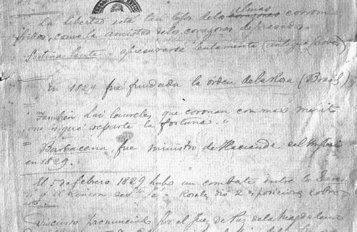

|
Heritage
|
|  |
| Angel J. Carranza, Estudios históricos (apuntes en la biblioteca) |
Welcome to the guided tour "heritage", which is about to depart! Please use the "back" and "forward" buttons below to take you through this part of the exhibition. Click on the images if you want to find out more about an exhibit, or if you want to see a larger image of it.
Debates over the meaning and content of the national past in terms of a shared heritage of patrimonial sites and immaterial values were gradually gaining momentum among the lettered elites of Argentina, Brazil and Chile over the last two decades of the nineteenth century. In the face of huge numbers of immigrants arriving from overseas, urban reforms that changed the outlook of the old colonial cities, and new social subjects pressing to get entry into the exclusive circles of political power and cultural consecration, members of the Creole ruling class started to rethink the question of national belonging in terms of a cultural legacy that needed to be preserved. Indeed, social order appeared to depend now on the possibility of cultural assimilation of popular masses that had to be transformed into citizens. Works by historians and philologists concerned with the education of the populace such as Joaquín V. Gonzalez's La tradición nacional (The National Tradition, 1888), José Veríssimo´s A educação nacional (National Education, 1890), or Sílvio Romero's A história do Brasil ensinada pela biografia dos seus heróis (The History of Brazil Taught by the Biographies of its Heroes, 1890) attempted both to define a linear and univocal historical canon, and to reflect on the ways in which it could be popularised to generate patriotic sentiment. But was was 'the national heritage'? Collectors and librarians such as Angel Justiniano Carranza, Benjamín Vicuña Mackenna, or Benjamin Franklin Ramiz Galvão, who also collaborated in organising their countries´ first historical exhibitions and museums, exchanged materials and browsed family and public libraries to craft a historical narrative
|
[ Back to index | Forward ] |